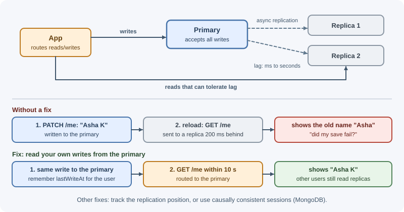
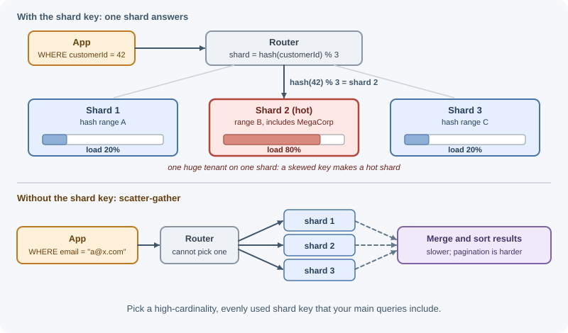

Database Scaling¶
Application servers are easy to scale because they are stateless; the database is hard to scale because it is the state. Database scaling covers the techniques for handling more queries and more data: tuning, caching, connection pooling, read replicas, bigger machines, partitioning, sharding, denormalization, and separate read models. The order in which you apply them matters as much as the techniques themselves.
Why it matters¶
In most growing systems the database becomes the first serious bottleneck. Adding app instances multiplies the queries and connections the database receives. Some scaling steps (an index, a cache) take an afternoon; others (sharding) change the data model, the queries, and operations forever. Knowing the cheap steps lets you postpone the expensive ones, and knowing the expensive ones lets you design so they remain possible.
Real-world usage¶
- GitHub: replicas first, then split by domain. In 2019 GitHub's main
MySQL cluster,
mysql1, answered about 950,000 queries/s, of which 900,000 went to replicas and only 50,000 to the primary: read replicas were carrying the read load. To go further, GitHub grouped tables into "schema domains", used SQL linters to block queries and transactions that crossed domains, then moved domains (130 of its busiest tables in one cutover) onto separate clusters. By 2021 those tables served 1.2 million queries/s, and the average load on each host had halved. (GitHub Blog, 2021) - Notion: application-level sharding with logical shards. When Postgres VACUUM began to stall and transaction ID wraparound became a risk, Notion sharded by workspace ID. It chose 480 logical shards (one Postgres schema each, 15 per database) on 32 physical databases, sized to stay under 500 GB per table and 10 TB per physical database. That is the "many logical shards" pattern in the shard-routing example. (Notion blog, 2021)
- Figma: vertical partitioning, then horizontal sharding. Moving groups of tables to their own databases was "a relatively easy and very impactful scaling lever". When single tables reached several terabytes and billions of rows, and vacuums began to hurt reliability, Figma looked at CockroachDB, TiDB, Spanner, and Vitess, then chose to build horizontal sharding on its existing RDS Postgres to avoid a risky data migration. (Figma blog, 2024)
- Shopify: shards isolated into pods. Shopify sharded in 2015, when "it was no longer possible to continue buying a larger database server". It then grouped shards into pods, each with fully isolated datastores and no cross-pod requests, so one failing shard cannot take down the platform. (Shopify Engineering)
Popular tools and providers¶
| Need | Common choices |
|---|---|
| Connection pooling | PgBouncer, Amazon RDS Proxy, the driver's built-in pool |
| Managed replicas and failover | Amazon RDS and Aurora, Google Cloud SQL, Azure Database for PostgreSQL/MySQL, MongoDB Atlas |
| Partitioning | PostgreSQL declarative partitioning, MySQL partitioning |
| Sharding | MongoDB sharded clusters, Vitess (MySQL), Citus (PostgreSQL), application-level routing |
| Distributed SQL (sharding built in) | Google Spanner, CockroachDB, TiDB, YugabyteDB |
| Read models and change feeds | Debezium or MongoDB change streams into Elasticsearch/OpenSearch, Redis, or a reporting database |
How it works¶
The usual order of steps¶
1. Tune queries and indexes cheapest; one missing index can be the whole problem
2. Cache hot reads removes repeated reads
3. Pool and limit connections protects the database from app scale-out
4. Add read replicas scales reads
5. Scale up (bigger machine) scales everything, simply, up to a limit
6. Partition tables smaller indexes, easier maintenance
7. Shard across machines scales writes and data size; highest complexity
Steps 4 and 5 are often swapped; a larger machine is frequently the simplest next step. Sharding comes last because it is hard to undo.
Step 1: queries and indexes¶
Most "the database is slow" problems are a missing index, an unbounded query, or an N+1 query pattern (one query per item in a list).
- Look at the slowest and most frequent queries (slow-query logs,
EXPLAIN, database monitoring). - Add indexes that match filters and sort order; see MongoDB indexes and performance.
- Fetch only needed fields and paginate.
- Batch N+1 queries into one query with
IN (...)or$in.
Step 2: caching¶
Caching hot, rarely changing reads (profiles, catalogs, configuration) can remove most read traffic. See cache fundamentals and caching strategies.
Step 3: connection pooling and connection limits¶
Opening a database connection is expensive (network handshake, TLS, authentication, server memory per connection), so drivers keep a pool of open connections that requests borrow and return.
The trap appears when you scale out the application:
Each app instance pool size: 20
Instances: 4 -> 80 connections fine
Instances: 30 -> 600 connections database may refuse connections
or slow down from memory and context switching
Databases have connection limits (PostgreSQL's default
max_connections is typically 100, for example), and many connections
can hurt performance even below the limit.
Remedies:
- Size pools so
instances × pool sizestays within what the database handles well, and keep autoscaling maximums consistent with that. - Use a connection pooler / proxy between apps and the database, such as PgBouncer for PostgreSQL or a managed proxy (for example Amazon RDS Proxy), which multiplexes many client connections onto fewer database connections.
- In serverless functions, create the client outside the handler so warm invocations reuse it, and prefer a proxy.
Step 4: read replicas¶
A replica is a copy of the database that continuously applies changes from the primary. Reads can go to replicas; writes go to the primary.

Replication is usually asynchronous, so replicas lag behind by milliseconds to seconds (more under heavy load). That causes the classic bug:
1. User updates their display name -> write to primary
2. Page reloads and reads the profile -> read from a lagging replica
3. User sees the OLD name and thinks the save failed
Guaranteeing read-your-writes consistency:
| Technique | How |
|---|---|
| Read from the primary after a write | For a short window (for example 5–10 s) after a user writes, route that user's reads to the primary |
| Read the primary for the user's own data | Profile and settings pages read the primary; public lists use replicas |
| Track replication position | Remember the write's log position and read from a replica that has applied it (or wait) |
| Causal consistency sessions | Some databases offer sessions that track causality. In MongoDB, a causally consistent session guarantees read-your-writes (and three related guarantees) in all situations only when reads use "majority" read concern and writes use "majority" write concern; see read and write concerns |
Replicas also provide failover: if the primary fails, a replica can be promoted. See MongoDB replication.
Primary-replica compared with multi-primary¶
| Primary-replica (single leader) | Multi-primary (multi-leader) | |
|---|---|---|
| Writes accepted by | One primary | Several nodes |
| Conflicts | None (one writer) | Concurrent writes to the same row on different nodes conflict |
| Write scaling | Limited to one node | Spread across nodes |
| Typical use | Most applications | Multi-region writes, offline-capable clients |
| Complexity | Low | High: conflict detection and resolution (last-write-wins, merges, CRDTs) |
Most systems should stay single-primary and scale writes with partitioning or sharding when needed.
Step 5: scale up¶
A larger instance (more CPU, RAM to hold the working set in memory, faster storage with more IOPS) improves everything without code changes. Managed databases make this a configuration change with a brief failover. Its limits are cost and the largest available machine, and it does not remove the single primary as a point of failure.
Step 6: partitioning¶
Partitioning splits one large table into smaller pieces, often still on the same server.
- Horizontal partitioning splits rows: orders from 2025 in one partition, 2026 in another.
- Vertical partitioning splits columns or tables: rarely used, large columns (descriptions, blobs) move to a separate table, or unrelated features move to separate databases.
Common partitioning schemes:
| Scheme | Rows assigned by | Good for | Watch out for |
|---|---|---|---|
| Range | Ranges of a key (dates, ids) | Time-series data; dropping old data by partition | Recent ranges get all new writes (hot partition) |
| Hash | Hash of a key modulo N | Even distribution | Range queries touch every partition |
| List | Explicit values (region = "EU") | Data grouped by category or region | Uneven sizes |
PostgreSQL supports declarative range, list, and hash partitioning. Benefits include smaller indexes, faster maintenance, and cheap deletion of old data by dropping a partition. Queries that filter on the partition key skip irrelevant partitions (partition pruning).
Step 7: sharding¶
Sharding is horizontal partitioning across multiple database servers. Each shard holds a subset of the data and handles reads and writes for it, so total write capacity and storage grow with the number of shards.

Choosing a shard key is the most important decision:
| Property | Why it matters |
|---|---|
| High cardinality | Many distinct values allow spreading data across many shards |
| Even frequency | One very common value (one giant customer) creates a hot shard |
| Not monotonically increasing for range sharding | Timestamps or auto-increment ids send all new writes to the last shard |
| Matches main queries | Queries that include the shard key go to one shard; others must ask all shards |
Problems sharding introduces:
- Hot shards: uneven load from a skewed key or a celebrity tenant.
- Cross-shard queries: queries without the shard key become scatter-gather (ask every shard, merge results), which is slower and harder to paginate.
- Cross-shard transactions: atomic updates across shards need distributed transactions or careful design to avoid them.
- Resharding: adding shards means moving data. Designs reduce the pain with consistent hashing or by creating many small logical shards up front and moving whole logical shards between servers.
- Operations: backups, schema changes, and monitoring multiply by the number of shards.
Some databases shard natively (MongoDB sharded clusters; see MongoDB sharding); others use extensions or middleware (for example Citus for PostgreSQL, Vitess for MySQL), or application-level routing.
Denormalization¶
A normalized schema stores each fact once and joins at read time. Denormalization stores redundant copies (an order stores the customer's name; a post stores its comment count) so reads avoid joins or aggregations. It speeds up reads at the cost of extra writes and the risk of copies disagreeing. Update copies in the same transaction where possible, or asynchronously through events when slight lag is acceptable. See data modeling and validation.
CQRS read models¶
Command Query Responsibility Segregation (CQRS) separates the model that handles writes from models optimized for reads. Writes go to the primary database; change events update one or more read models shaped for specific queries (a search index, a precomputed dashboard table, a feed per user).
commands ──> write model (normalized DB) ──events──> projector ──> read model(s)
queries <────────────────────────────────────────────────────────┘
(search index, cache, reporting DB)
Read models scale independently and make complex queries cheap, but they are eventually consistent with the write model and add infrastructure. Use CQRS for parts of a system with very different read and write needs, not as a default. See event-driven architecture.
When to use and when not to use¶
- Always start with steps 1 to 3 (queries and indexes, caching, connection budgets). They are cheap and often make later steps unnecessary.
- Add read replicas when reads dominate and most of them can tolerate a little staleness. Do not add them to fix slow writes or a missing index.
- Scale up when the working set no longer fits in memory or CPU is saturated and a larger instance is available at an acceptable cost.
- Partition a table (on one server) when it is huge and queries or retention follow a natural key, usually time.
- Shard only when write volume, data size, or maintenance on a single primary cannot be fixed by the steps above. It changes queries, transactions, and operations for good.
- Do not use multi-primary just for write scaling; use it for multi-region writes or offline clients, and only if you can resolve conflicts.
| Read replicas | Partitioning (one server) | Sharding (many servers) | |
|---|---|---|---|
| Scales | Reads | Maintenance, index size, deletion of old data | Writes, storage, and reads |
| Write capacity | Unchanged (one primary) | Unchanged (one server) | Grows with the number of shards |
| Application changes | Route reads; handle replica lag | Usually none; queries should filter on the partition key | Every query needs the shard key; cross-shard work is redesigned |
| Consistency | Replicas lag the primary | Same as before | Cross-shard transactions are hard |
| Operational cost | Low to medium | Low | High: per-shard backups, migrations, rebalancing |
| Reversible? | Yes, remove replicas | Mostly | Very hard |
| Typical trigger | Read-heavy load, many lag-tolerant reads | Huge time-series or log tables; slow VACUUM | Largest instance not enough; write or storage limits |
Practical examples¶
Routing reads and writes in Node.js¶
import pg from "pg";
// Pools sized per instance: instances × max must fit the database's limits
const primary = new pg.Pool({ connectionString: process.env.DB_PRIMARY_URL, max: 10 });
const replica = new pg.Pool({ connectionString: process.env.DB_REPLICA_URL, max: 10 });
const RECENT_WRITE_MS = 10_000;
const lastWriteAt = new Map(); // userId -> timestamp (use Redis with many instances)
export async function updateDisplayName(userId, name) {
await primary.query("UPDATE users SET display_name = $1 WHERE id = $2", [name, userId]);
lastWriteAt.set(userId, Date.now());
}
export async function getProfile(userId) {
// Read-your-writes: recent writers read from the primary
const recentlyWrote = Date.now() - (lastWriteAt.get(userId) ?? 0) < RECENT_WRITE_MS;
const pool = recentlyWrote ? primary : replica;
const { rows } = await pool.query("SELECT id, display_name FROM users WHERE id = $1", [userId]);
return rows[0] ?? null;
}
Range partitioning in PostgreSQL¶
CREATE TABLE orders (
id bigint NOT NULL,
customer_id bigint NOT NULL,
created_at timestamptz NOT NULL,
total_cents integer NOT NULL,
PRIMARY KEY (id, created_at) -- the partition key must be in the primary key
) PARTITION BY RANGE (created_at);
CREATE TABLE orders_2026 PARTITION OF orders
FOR VALUES FROM ('2026-01-01') TO ('2027-01-01');
CREATE TABLE orders_2027 PARTITION OF orders
FOR VALUES FROM ('2027-01-01') TO ('2028-01-01');
-- Only orders_2026 is scanned (partition pruning)
SELECT * FROM orders WHERE created_at >= '2026-11-01' AND created_at < '2026-12-01';
Application-level shard routing¶
import { createHash } from "node:crypto";
// Many logical shards mapped onto fewer physical databases.
// Moving a logical shard later only changes this map, not the hash.
const LOGICAL_SHARDS = 256;
const shardMap = buildShardMap(); // your code: logical shard number -> connection pool
function logicalShardFor(customerId) {
const hash = createHash("sha256").update(String(customerId)).digest();
return hash.readUInt32BE(0) % LOGICAL_SHARDS;
}
export function poolForCustomer(customerId) {
return shardMap.get(logicalShardFor(customerId));
}
// Every query for a customer's data includes the shard key
const pool = poolForCustomer(customerId);
await pool.query("SELECT * FROM orders WHERE customer_id = $1", [customerId]);
Best practices¶
- Exhaust query tuning, indexing, and caching before adding infrastructure.
- Budget database connections across all instances and use a pooler when instance counts grow.
- Send reads to replicas only when they tolerate lag; read the primary for read-your-writes cases.
- Prefer a single primary; avoid multi-primary unless you need multi-region writes and can handle conflicts.
- Partition large, time-based tables early; it is cheap and simplifies retention.
- Choose shard keys from your main access patterns, with high cardinality and even distribution.
- Design for many logical shards from the start if sharding is likely.
- Denormalize or build read models only for proven slow reads.
In production¶
"Too many connections" after a scale-out
- Symptom: new app instances fail health checks, or requests fail with
connection errors (PostgreSQL error
53300,too_many_connections). - Detect: count connections (
SELECT count(*) FROM pg_stat_activity) againstmax_connections; alert at around 80% of the limit. - Cause: every instance opens its own pool: 30 instances × 20 connections is 600, against a default limit that is typically 100.
- Fix: budget connections (
max instances × pool sizebelow the limit), put PgBouncer or RDS Proxy in front, and set the autoscaler's maximum from that budget.
Users say "my change didn't save"
- Symptom: a user edits a record, the page reloads, and the old value appears; refreshing again "fixes" it.
- Detect: replica lag. On PostgreSQL,
replay_laginpg_stat_replicationon the primary; on MongoDB,rs.printSecondaryReplicationInfo(). Correlate lag spikes with the complaints. - Cause: the read after the write went to an asynchronous replica that had not applied it yet.
- Fix: read-your-writes routing (the example above), alerts on lag, and taking replicas out of the read pool when they fall too far behind.
One shard is overloaded
- Symptom: one shard's CPU or storage is far above the others; slow queries for one set of customers.
- Detect: per-shard metrics (queries/s, CPU, size) and the busiest shard-key values.
- Cause: a skewed or monotonically increasing shard key, or one very large tenant sharing a shard.
- Fix: move logical shards between physical databases, give the large tenant its own shard, or reshard with a better key (hashed, or a compound key).
VACUUM cannot keep up on a huge table
- Symptom: disk keeps growing after deletes, queries slow down, and autovacuum runs for hours.
- Detect:
n_dead_tupandlast_autovacuuminpg_stat_user_tables; table and index sizes trending up. - Cause: one very large, busy table; Notion and Figma both hit this before sharding.
- Fix: tune autovacuum for that table and partition it. Each partition is a smaller table to vacuum, and dropping or detaching an old partition "entirely avoid[s] the VACUUM overhead caused by a bulk DELETE" (PostgreSQL docs). Archive cold data; shard if the primary is still too busy.
A shard-key-less query slows every shard
- Symptom: one admin search or report makes all shards slower at once.
- Detect: query logs or
EXPLAINshow the query running on every shard. - Cause: the query does not include the shard key, so it becomes scatter-gather.
- Fix: add the shard key to the query, keep a lookup table from the searched field to the shard key, or serve the query from a read model (search index, reporting database).
Important terminology¶
- Connection pool: A set of reusable open database connections.
- Read replica: A copy of the database that serves reads and follows the primary.
- Replication lag: How far a replica is behind the primary.
- Read-your-writes consistency: A guarantee that users see their own recent writes.
- Partitioning: Splitting a table into smaller pieces by a key.
- Sharding: Partitioning data across multiple database servers.
- Shard key: The field that determines which shard holds a record.
- Hot shard: A shard receiving disproportionate load.
- Scatter-gather query: A query sent to every shard with results merged.
- Denormalization: Storing redundant data to speed up reads.
- CQRS: Separating write models from read-optimized models.
Common mistakes and misconceptions¶
- Sharding before fixing slow queries and missing indexes.
- Scaling app instances without considering total database connections.
- Sending every read to replicas and confusing users with stale data after their own updates.
- Choosing a timestamp or auto-increment id as a range shard key, so all writes hit one shard.
- Assuming replicas increase write capacity; they only scale reads.
- Thinking partitioning and sharding are the same; partitions can live on one server.
- Adopting CQRS everywhere and paying for eventual consistency where it was not needed.
Revision questions¶
- In what order would you apply database scaling techniques, and why is sharding last?
- Why can scaling out the application overload the database, and how do you prevent it?
- What is replication lag, and how can you provide read-your-writes consistency?
- Compare range, hash, and list partitioning.
- What makes a good shard key, and what is a hot shard?
- What problem does CQRS solve, and what does it cost?
- GitHub's main cluster sent about 95% of its queries to replicas. What does that tell you about its workload, and why did it still need to partition?
- Why did Notion create 480 logical shards for only 32 physical databases?
Further learning¶
- PostgreSQL: Table partitioning
- MongoDB: Sharding
- MongoDB: Replication
- Microsoft: Data partitioning guidance
- Microsoft: CQRS pattern
- Martin Fowler: CQRS
- MongoDB: Causal consistency and read and write concerns
- Notion: Herding elephants, sharding Postgres
- GitHub: Partitioning GitHub's relational databases
- Related: database fundamentals, PostgreSQL, consistency and CAP theorem.